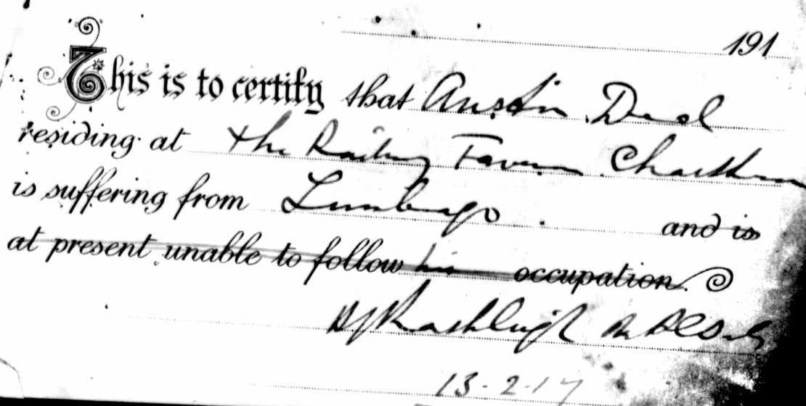
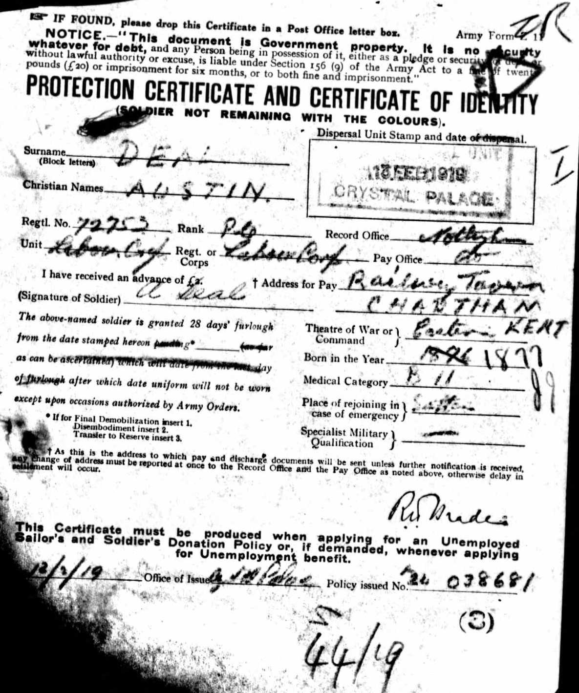
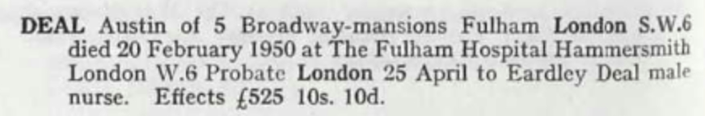
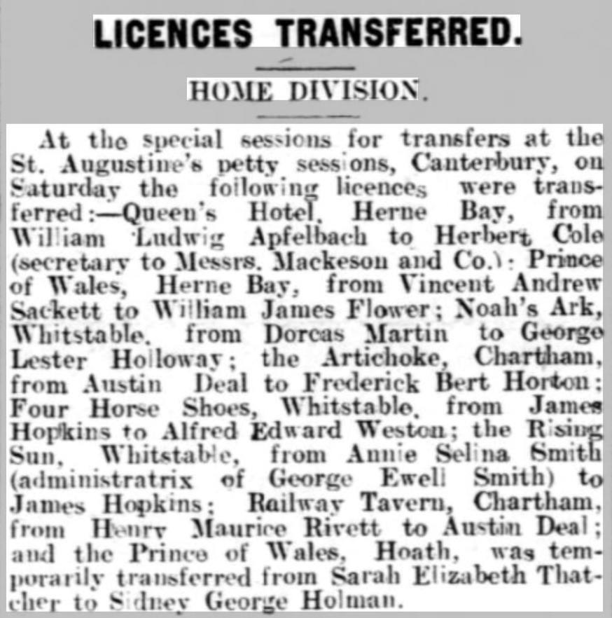
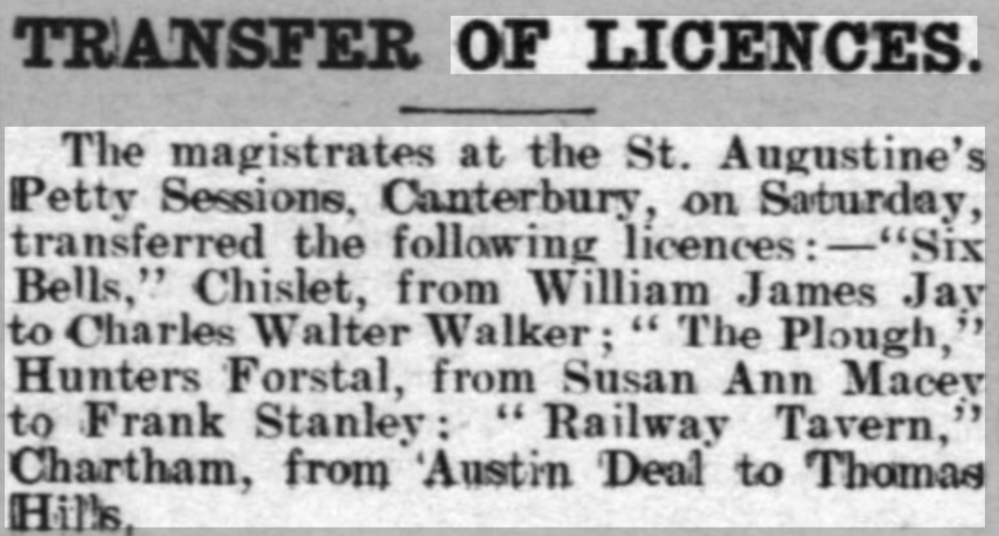

Austin Alfred Deal 1876 - 1950
[ Home ] | [ Calendar ] | [ Surnames Index ] | [ Errors ] | [ Family History ]A cemetery caretaker, butcher's assistant, asylum farm foreman and licensed victualler and the child of William Deal (a bailiff asylum farm) and Sarah Dale (a caretaker of bridge union workhouse), Austin Deal, the first cousin twice-removed on the father's side of Nigel Horne, was born in Chartham, Kent, England on 23 Dec 18761,2,3, was baptised there at St Mary on 11 Feb 1877 and married Emily Kenton (with whom he had 3 children: Eardley, William Richard and Hilda Mary) at St George's Church, Ramsgate, Kent, England on 19 Jan 19015.
During his life, he was living at Asylum Farm Cottages in Chartham on 3 Apr 18816; at Asylum Cottages in Chartham on 5 Apr 18917; at 6 Dane Park Road in Ramsgate on 31 Mar 19018; at Kent County Lunatic Asylum in Chartham on 2 Apr 19119; at Railway Tavern in Chartham in Dec 1915; at Cemetery Lodge in Chartham on 29 Sept 19391; and at 5 Broadway Mansions, Fulham, London, England in 1950. He served in the military from 10 Dec 1915 to 21 Oct 1918 (regiment: Labour Corps; Service number: 41093 Invalided out with lumbago).
He died on 20 Feb 1950 in Fulham Hospital, Hammersmith, London4.
Parents
- William was born c. 1848
- Sarah Ann was born in Oct 1855
Children
- Eardley was born on 25 Mar 1902
- William Richard was born on 10 Sept 1904
- Hilda Mary was born on 28 Sept 1906
Citations
- 1939 Register - Findmypast (was recorded at this address)
- British Army Service Records - Findmypast
- England & Wales births 1837-2006 - Findmypast
- England & Wales deaths 1837-2007 - Findmypast
- England & Wales marriages 1837-2008 - Findmypast
- 1881 England, Wales & Scotland Census - Findmypast (was age 4 and the son of the head of the household)
- 1891 England, Wales & Scotland Census - Findmypast (was age 14 and the son of the head of the household)
- 1901 England, Wales & Scotland Census - Findmypast (was age 24 and the head of the household)
- 1911 Census for England & Wales - Findmypast (was age 34 and the head of the household)
Media
Austin Deal - WW1 Record - Page 1

Austin Deal - WWI Record - Page 2

Austin Deal - WWI Record - Page 3

Austin Deal - WWI Service Record - page 4

Austin Deal - WWI Record - Page 5

Austin Deal - WWI Record - Page 6

Austin Deal - WWI Record - Page 7

Austin Deal - WWI Record - Page 8

Austin Deal - WWI Record - Page 9

Austin Deal - Probate Record

Whitstable Times and Herne Bay Herald January 9, 1915

Whitstable Times and Herne Bay Herald 14 Sep 1929

England & Wales births 1837-2006 - BMD/B/1877/1/AZ/000155/117
England & Wales marriages 1837-2008 - BMD/M/1901/1/AZ/000065/181
Kent, Canterbury Archdeaconry marriages 1538-1928 - GBPRS/CANT/M/97241239/1
England Marriages 1538-1973 - R_848242216
England & Wales deaths 1837-2007 - BMD/D/1950/1/AZ/000280/093
1881 England, Wales & Scotland Census - GBC/1881/0004706713
1891 England, Wales & Scotland Census - GBC/1891/0005720383
1939 Register Transcription - TNA-R39-1803-1803E-026-26
1901 England, Wales & Scotland Census Transcription - GBC-1901-0007455633
1911 England, Wales & Scotland Census Transcription - GBC-1911-RG14-04308-0064-7
England Births & Baptisms 1538-1975 - R_885423786
Kent Baptisms - GBPRS/CANT/B/96194053
British Army Service Records - GBM/WO363-4/7295355/24/515
Family Tree

Map
Generated by ged2site. Last updated on Jul 3, 2024
Known Issues
Residence record for Dec 1915 contains no citation
Residence record for 1950 contains no citation
Listed in the residence for 2 Apr 1911, but spouse Emily Kenton is not
Listed in the residence for Dec 1915, but spouse Emily Kenton is not
Location for the event between 10 Dec 1915 and 21 Oct 1918 is empty